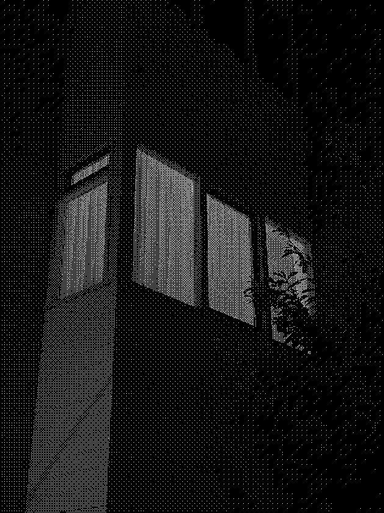
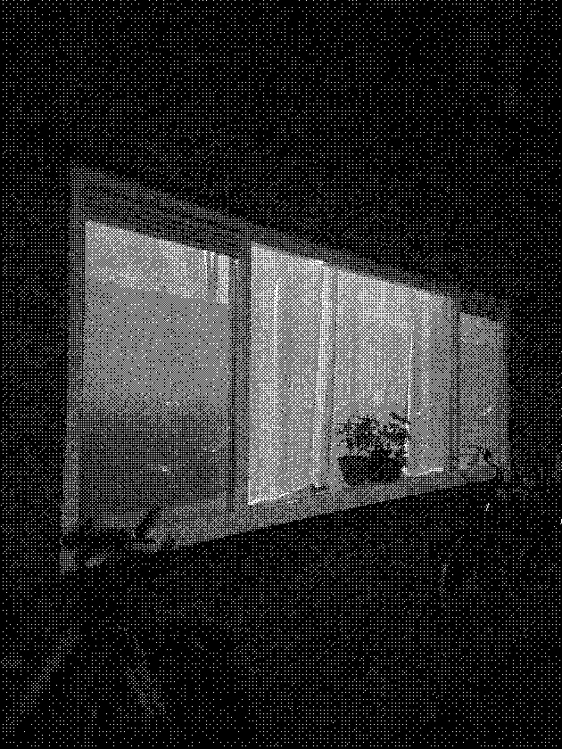
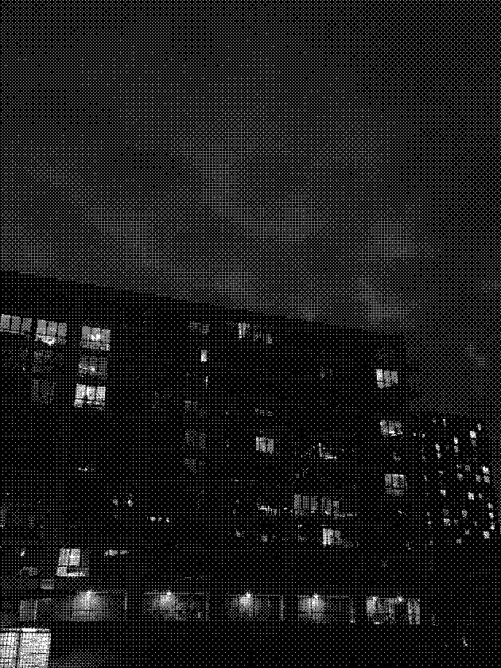
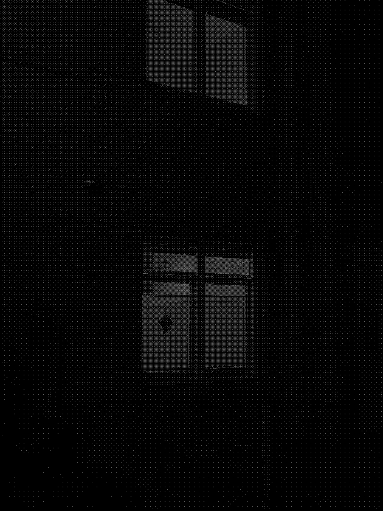

Preface
The journey she has made through lived experiences, has brought me to where I stand today. Just as she had once before sunk her toes into the warm, delicate sand, in a place I have called home. I now, yet again, allow myself to sink back into the cold sand of the north.
Over the last year, I have developed a habit of gazing into the windows of each apartment belonging to those who have chosen to leave their lights ablaze. I very often found myself with an insufferably present bubble of sadness sitting in my chest, yearning for what lies beyond the windowpane. Yearning to share the same feeling of familiarity, served on a warm plate of food. From where I stood on the outside, I began to write my own tales. Quiet as a mouse, I imagined wonderful worlds of fairytales and stories told from the comforts of home, of course still with the undeniable belief that those residing within would confidently be able to say to me, “I am at home here”. Many a time I would see the curtains drawn shut, which in its own sense kept me an outsider, alone and left with my imagination - Left to create a world of wonder within the four wooden frames, a battle of finding peace on either side of the cold glass. Within the window frames lay my sense of belonging, my sense of feeling at home, the comforts of my childhood even. But with the door shut, and the curtains drawn, I was left outside with my fingertips cold and my heart full of longing.
I have pulled together what I would call an attempt to write an Auto fiction. A story that mourns the death of one’s previous home. Over time, I began documenting the windows I saw. Image after image, feeding them into this metaphorical home I was developing. Bringing to life the vivid stories, I hoped to tell. Looking at myself in the past and future, all while living in the present. Finding a way to separate the different versions of myself, creating distance, in order to take it all in.
To enter a home through the door
A hole within the four walled structure, a rectangle as such. Boarded up, and asking for an invitation. Weathered down by rain, burned by the sun, sealed by a sticky paint, in any colour you please. I brush off my boots at your front door, sand having filled them to the brim. Past wanderings through different soil, traces printed along the ground. My final question stays, shoes off or on?
Let the starfish in the sky, guide me -

On nights where the moon hangs low, and the stars whisper my name. I know that the night has always been the same. I know that the air I breathe is the familiar, having kept me company, many years ago. I can hear the wind, still howling in pain. As though he misses his loved ones. I watch as the clouds, find their way to their friends, through the clear open window…so recently cleaned and cared for. I dance with the invisible grass, brushing against my knees. The dreaming rain, hammering against my window. And when the moon and the sun do not compete against each other in the sky, they are at home. At peace, amongst a shared plane.To enter a home through a crack in the wall
As a mouse, a snake or an unwanted cockroach, I am despised. The gravestones of my ancestors, unmarked in the hallways of the velveted floors. If what it takes for a sanctuary to exist, is death, then the rooms beyond the walls are my holy place. When sacrifice means to make holy, then the bones of dead mice may lay their paths. And I shall find my way back into the home, again and again. Through every crack in the wall, or every hole between the beams of a house, I see the light. Guiding me out of the dark, giving me hope in the form of warmth that can be felt. Yet, a coward I am, I hide in the dark, a false sanctuary. One that provides safety, and nothing else.
She dreams of square lights, and static air -
As the night shifts from a soft purple to a dangerous shade of blue, an icy wind whispers into a cracked window. The long forgotten songs of our children, weep through the air. A hand reaches out, finding its way to the cold polished surface of a nightstand. A hand guided by a sudden alertness, awoken from a dream that cannot quite be remembered, grasping into dusk towards a little bedside lamp. The lamp flickers on with an old electrical “fsk”, it was an old lamp you see, part of a collection of long forgotten objects. A girl - she sits up against the frame of her bed, a hard wooden panel that in truth always dug into her back, and was never particularly comfortable. She makes her way to the cabinet and grabs her dearest and warmest coat, slipping her feet into a pair of worn out shoes. With a silver key in hand, she slips out of the door.

The streets at this hour have always been ones of silence. No voices to be heard, no clattering of engines. By now, she knows the streets well, though a sense of familiarity is still lacking. Their crooked walls and jumbled pathways, guiding the way with squares of light, leaving a bed of yellow at their feet. She begins to follow these squares of light, a habit formed by many sleepless nights just like this one, in same way that her clock has always told the time. She cannot help but gaze into the windows, listening for the buzz of the fluorescent light, or a flicker of a candle. Watching for a faint movement of a shadow to peek through the glow of the curtains, hoping for a glance into a hidden world, one to which she does not possess the key. A realm where only those that live within, may be granted entry.She watches as darkness chooses to sit against the rims of the window, thinking to herself how she is not the only one who curiously looks within. On the other side of the sleeted glass, sticking itself onto the windowpane, like a cup of warm milk, is a veil of condensation. This thought has her admitting to herself, that standing where she is, is not the most pleasant of experiences. Yet she was drawn to a comfort that she held by the hand, one she could only explain as that of a hug from a strange ancestor, from a time before her own. A watchful eye that reminds her of all she feels, from the tips of her fingers to the bones deep within her. Whispering in her ears with a breath as hot as the air that circulates within the chimney high above.
To enter a home through a place of worship and ritual
Open structure, hollow air. Sticky and sweet smoke, finding it’s way through every nook and cranny. A fruit bowl lays stagnant, untouched. An offering to the gods, in return for shelter. An umbrella for the rains within the mind, a coat for the cold wind blowing. The hollow air no longer so hollow, is filled with the thoughts of many. Questions and answers dancing together under the golden light.
One double bed, with blue sheets laid gently above -

1 bedside table, the man who sold it said it was vintage. 2 wooden cupboards, filled to the brim with clothes and jackets. 1 plastic crate, with all the items one might need but cannot be found here. 1 small broken clock, to keep the time that my heart follows. 1 large broken clock, I see there must be something of a distaste I have towards clocks that tell the time. 1 bedside lamp, with ornamented glass. 6 plants of different variety, all watered regularly with a routine well kept. 2 candle holders, shined and inherited from a relative no longer alive. 2 large carpets, chosen to keep my feet warm on cold days such as today. 10 found bones, all from the beach which is no longer the same. 1 stuffed bunny, which has travelled with me from far. 1 CD player, with music gifted by a friend. 7 empty cans, different drinks I have allowed myself to try. 12 scarfs hanging, to keep me warm through different seasons. 2 wooden boxes, both filled with jewellery I rarely ever use but was gifted by those that love me dearly. 1 Chinese calendar, to remind me of festivities I no longer celebrate. 3 working radiators, to keep me warm on the cold days. 2 broken radiators, for days that require no extra warmth. 1 old toothbrush, it is not mine yet I keep it to remind me of the one I have left behind. 8 notebooks, all filled to the brim with past ideas and unfinished sentences. 2 blurry mirrors, to watch my reflection age. 1 teapot and 1 cup, to be brewed with teas harvested in warm climates. 1 old cat, found in a river and brought over the warm seas of Asia.To enter a home in a dream
When you can still remember where the living room was, where the kitchen was, where your dear room was. The room where your memories are buried, peeling open layer by layer. A home you may only access in the dreams you dream, or in the memories of your waking days. No longer yours to keep.
One double bed, with blue sheets laid gently above -
A bed is a bed, and when I lay my body down, I am aware of the general direction I face. Maybe it’s the light I feel, maybe each person is blessed with an internal feeling of where north or south is. But somehow I find myself in the east when I was indeed in the west. I opened my eyes, but I chose to keep them shut. it’s funny how I can still feel my body swaying softly, in sync with each curl of the wave. I allow myself to be enveloped by the cold of my blanket, this feeling I know will stay the same wherever I am. In my open eyes, I see a circle of purple, a hazy little dot on the wall. It feels like the start of a story to be told, maybe even one that has already been told. I place my hand off of the side of the bed, stretching it out towards the sky then towards the old furry carpet that has been forcefully stapled into the edges of my four walls. I close my eyes, and I can almost feel the uneven surface wrinkled under my finger tips. The floor is not the same, the magpies that sing are not the same. Yet somehow on the brink of sleep, I feel as though the blanket may once again be the same. Maybe there are a few less creases, or maybe a few more. I lay awake when I should be asleep, and I am fast asleep when I should be awake. The clock ticking eternally yielding for a different time. It doesn’t tick and it doesn’t tock, but it sways gently forwards and backwards, just as an internal clock should. I open my windows, to smell the air. It is humid still, but the sweet smell of salt has been replaced by the dry crumble of stone. I remember as a child I could always tell where I was by the smell of the air. I guess old habits die hard. I miss the smell of the sun, beaming down on my cheeks, but mostly the warm air, I try again to bring the bed cover over my head, and hope that by breathing in my own recycled air, I could somehow trick my mind into feeling as if my bed was facing the south once again. The south where the waves rock softly, in the glimmer of light. A place where I can always feel my internal clock, is swaying exactly as it should.
(As quietly as I arrived, I must leave again. Drifting back into the calm waves, lapping up my sorrows as if a dog that has only ever known what the owner has placed before him. I take my belongings, feeling a little lost, as always. With a pouch hanging from a stick, my symbol of longing, so hard to hide. I have nowhere to call my home, I sing to myself as I gaze out the window. What lies beyond is neither mine or anyone else’s. In the weeks I have spent looking out the large balcony windows, I have grown so accustomed to seeing. I have more times than I wish to admit, felt tears spilling back into that damned dog of an ocean. Knowing that what I must soon return to calling my home, is the mere four walls of my seventeen square foot bedroom where each foot of wall is my own curated paradise.)
To enter a home through the window of another
Climbing through a window left open, feels like romance. The sweetest kind. The secret kind. One that is shared between a breath of fresh air, and a touch of warmth against one’s cheek. In a moment’s notice, there is a change in light. An invitation of sorts, or a case against the yearning. Once the glass is shifted, a change in atmosphere. Hushed voices, forming a secret club. Hidden in plain sight, with a mutual bond. Or a moment of silence, to calm the rough seas. A struggle along the path of smooth washed sand. The smell of clean fur, like a perfume yet to be smelled.
Dancing to music, only she can hear -

She forgets she’s in her 20s sometimes, dancing in her room to music only she can hear. The lights inside her room, coming from a collection of lamps, all old, all wonky. They seem precious to her. Each so carefully placed, and selected. She seems to not see me, a glow from her future. Watching her do such simple movements, that of walking across the room to blow out each candle, or that of shutting down the electrical hum of the forever glowing fluorescent bulbs.She has her curtains drawn, in that room of hers, with dark blue rims that frame her window to the outside world. It is warm inside. She likes to keep it warm, like an old wives tale that is told to stop the children from forgetting. Regularly, the items on the window sill move and sometimes a new item is placed or one disappears. Maybe she does it to allow all the objects in her collection to experience the sun they so desperately need. Or maybe she does it so that every once in a while she has a different memory to remind her, always, that home is only a phone call away. The room itself is cared for, a home she has created for herself. From the outside all that is seen is the spread of light from the different orange bulbs where the songs she sings are but the imprints of shadows and their reflections.
Now I end my humble gaze, as the night watch of the city. Of the city that is not my own.
Acknowledgements
Within the essay there are many embedded elements from collected inspirations, coming from different poets and writers, as a way to diverge into the ways that artists and writers explore the idea of home as a metaphor within their work. I found myself fascinated with the way that a home can be more than an architectural structure, how it can be an invisible space, where people, objects and memories all come together to form something of a sanctuary.
A major starting point within my process was the painting by Jodie Dodd, Night house, 1975. Her paintings often have an atmospheric feel to them, taking from observations in her immediate surroundings and creating paintings which aim to evoke a sense of familiarity within the audience. This technique I chose to use within my own writing, as a way to bring empathy to the story of one who struggles to find home, abroad.
I took many of my grounding ideas from Sanctuary byMarina Warner. Much of her writing encompasses profound ideas that guide the ways in which to view the home, as well as an emphasis on the importance of storytelling within culture and society. It compares home to the longstanding tradition of sanctuary, as well as goes through the ideas surrounding finding home as a “The exile, the immigrant, the asylum seeker, the travelling labourer”, and how to take refuge is not the same as feeling at home and belonging. It touches on the history of terms such as “sanctuary” and “home-land”, and what the effects of such terms have when integrated within our society. Lastly, the idea that folk and fantasy traditions, may be able to provide as an alternative shelter or site of memory, was a core idea within my own essay.
I have taken ideas from the book of symbols, Window. The text breaks down the window as a structure, and sheds light on the different ways that a window can be viewed, or what symbolic value it holds. It goes through the different ways that windows relate to the structure in a material sense, as well as in a metaphorical sense. It explores the symbology that a window holds within the context of a fairy tale, or a within biblical stories. This helped me to develop a sense for understanding structural architecture as more than its material form, and begin to place ideas such as the home, in a metaphorical context.
I used the structure from Macguffin, The life of things, N.2. The magazine, has chapters that dive into the different aspects of a window, for example, The View, The Blind, The Stage. As ways to enter into the magazine. This has helped navigate my own essay, through shaping the different ways to enter through the metaphorical home, just as in the magazine, they have used this way of entering the window.
I have also taken the ideas of sanctuary, in relation to home from the artist Francis Alÿs, and his film Children’s Game #24: Pandemic Games. This idea of the sanctuary as a metaphor for home, being performed within a children’s game. Sheds light on the notion, that as a community and society, we are heavily reliant on feeling at home, or having the space for sanctuary. Additionally, the work from artist Jeroen Kooijmans’, Flat, 1995, has inspired within my own work, this sense of looking into people’s windows and viewing the lives of others through the separation of glass.